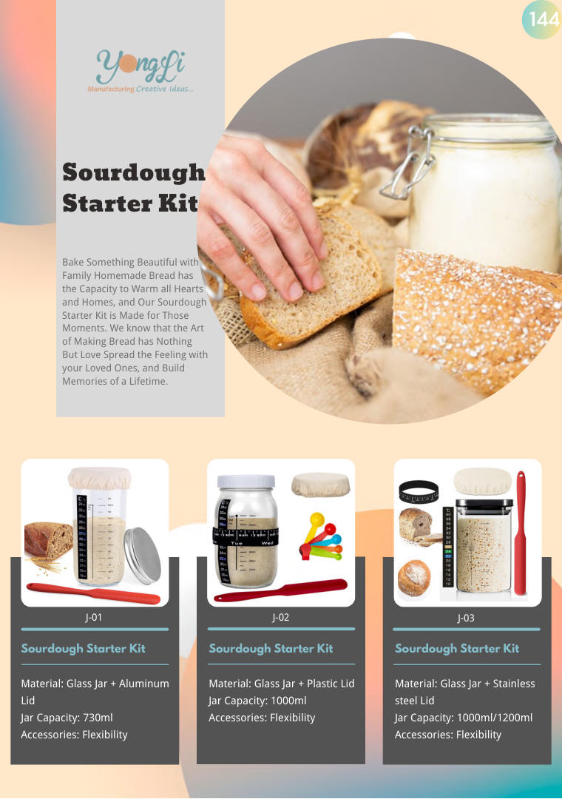
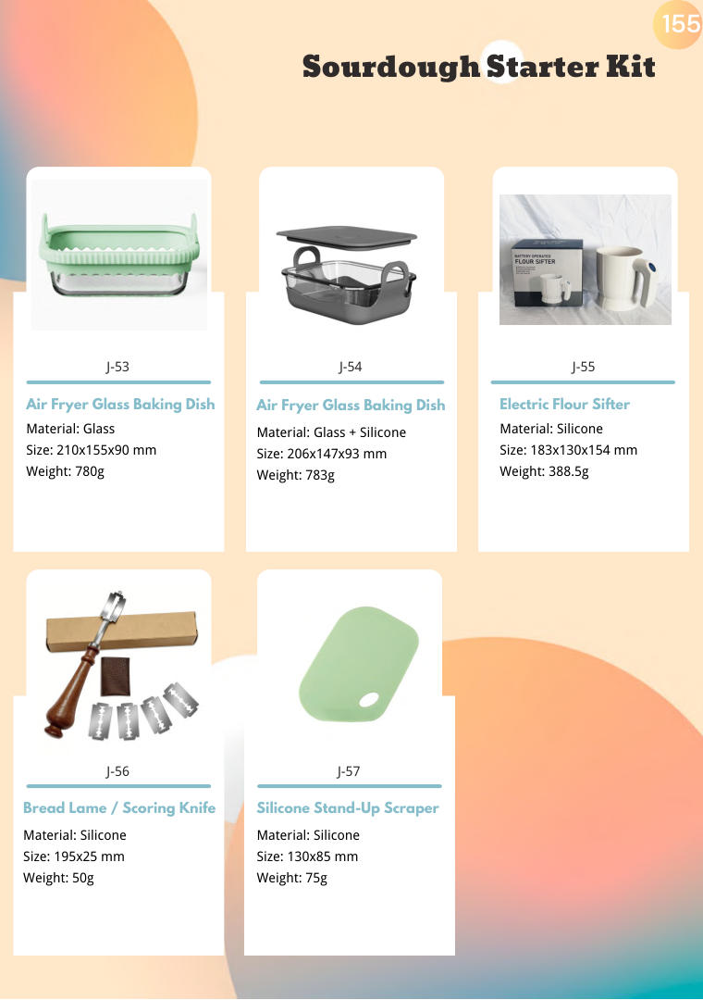

Sourdough Starter Kit — Kitchen Gadgets
Sourdough Starter Kit wholesale from Yongli — BSCI & ISO 9001 certified OEM/ODM manufacturer of silicone and stainless steel kitchenware since 2010. Full range of 12 catalog pages, custom OEM/ODM welcome.


About This Range
- Range: 12 catalog pages starting at PDF page 144
- Materials: Food-grade silicone, stainless steel, BPA-free plastic
- OEM & ODM: custom mold design, Pantone color matching, custom packaging and logo printing
- Exported to 34 countries across Europe, America, Middle East and beyond
- In-house R&D, tooling and mass production since 2010
Quality & Compliance
BSCI & ISO 9001 certified OEM/ODM manufacturer since 2010. Serving customers in 34 countries with one-stop OEM, packaging, design and logistics. Vision: Make Globe Trade Easy.
Products in this range
Product names and codes exactly as printed in the catalogue. Click a page number to jump straight to that page.
| Code | Product | Page |
|---|---|---|
| J-02 | Sourdough Starter Kit | p.144 → |
| J-01 | Sourdough Starter Kit | p.144 → |
| J-03 | Sourdough Starter Kit | p.144 → |
| — | Lid Jar Capacity: 730ml Accessories: Flexibility | p.144 → |
| — | Jar Capacity: 1000ml Accessories: Flexibility | p.144 → |
| — | steel Lid Jar Capacity: 1000ml/1200ml Accessories: Flexibility | p.144 → |
| J-06 | Sourdough Starter Kit | p.145 → |
| J-04 | Sourdough Starter Kit | p.145 → |
| J-05 | Sourdough Starter Kit | p.145 → |
| J-09 | Sourdough Starter Kit | p.145 → |
| J-07 | Sourdough Starter Kit | p.145 → |
| J-08 | Sourdough Starter Kit | p.145 → |
| — | Lid Jar Capacity: 730ml/1000ml Accessories: Flexibility | p.145 → |
| — | Lid Jar Capacity: 700ml/1000ml Accessories: Flexibility | p.145 → |
| — | Lid Jar Capacity: 1400ml Accessories: Flexibility | p.145 → |
| — | Jar Capacity: 730ml/1000ml/ 1 Gallon Accessories: Flexibility | p.145 → |
| — | Lid Jar Capacity: 1000ml Accessories: Flexibility | p.145 → |
| J-12 | Sourdough Starter Kit | p.146 → |
| J-10 | Sourdough Starter Kit | p.146 → |
| J-11 | Sourdough Starter Kit | p.146 → |
| J-15 | Sourdough Starter Kit | p.146 → |
| J-13 | Sourdough Starter Kit | p.146 → |
| J-14 | Sourdough Starter Kit | p.146 → |
| — | Jar Capacity: 850ml/1000ml Accessories: Flexibility | p.146 → |
| — | Jar Capacity: 770ml/1000ml Accessories: Flexibility | p.146 → |
| — | Lid Jar Capacity: 1500ml Accessories: Flexibility | p.146 → |
| — | Lid Jar Capacity: 1000ml*2 Accessories: Flexibility | p.146 → |
| — | Jar Capacity: 1000ml*2 Accessories: Flexibility | p.146 → |
| J-18 | Sourdough Starter Kit | p.147 → |
| J-16 | Sourdough Starter Kit | p.147 → |
| J-17 | Sourdough Starter Kit | p.147 → |
| J-19 | Sourdough Starter Kit · Glass Fermentation Jar · Silicone Spatula · Linen Liner | p.147 → |
| J-20 | Sourdough Starter Kit · Glass Fermentation Jar · Silicone Spatula · Razor Blades | p.147 → |
| J-21 | Sourdough Starter Kit · Sourdough Starter Jar · Silicone Spatula · Metal Lid | p.147 → |
| — | Lid Jar Capacity: 730ml*2 Accessories: Flexibility | p.147 → |
| — | Jar Capacity: 1200ml Accessories: Flexibility | p.147 → |
| J-24 | Sourdough Starter Kit · Round & Oval Proofing Basket · Linen Liner | p.148 → |
| J-22 | Sourdough Starter Kit · Banneton Proofing Basket · Linen Liner | p.148 → |
| J-23 | Sourdough Starter Kit · Banneton Proofing Basket · Linen Liner | p.148 → |
| J-25 | Sourdough Starter Kit · Round & Oval Proofing Basket · Linen Liner · Silicone Spatula | p.148 → |
| J-26 | Sourdough Starter Kit · Round & Oval Proofing Basket · Bread Lame Blades · Flour Duster | p.148 → |
| J-27 | Sourdough Starter Kit · Proofing Basket · Danish Dough Whisk | p.148 → |
| J-30 | Sourdough Starter Kit · Round & Oval Proofing Basket · Linen Liner · Sourdough Bread | p.149 → |
| J-28 | Sourdough Starter Kit · Cotton Rope Proofing Basket · Dough Scraper · Plastic Scraper | p.149 → |
| J-29 | Sourdough Starter Kit · Oval Proofing Basket · Round Proofing Basket | p.149 → |
| J-31 | Sourdough Starter Kit · Round & Oval Proofing Basket · Linen Liner · Pastry Brush | p.149 → |
| J-32 | Sourdough Starter Box · Round & Oval Proofing Basket · Linen Liner | p.149 → |
| J-33 | Sourdough Starter Box · Foldable Dough Proofer Box · Round Proofing Basket | p.149 → |
| J-36 | Silicone Sourdough Basket · Dough Whisk · Silicone Pastry Brush | p.150 → |
| J-34 | Silicone Sourdough Basket · Silicone Proofing Basket · Silicone Baking Sling | p.150 → |
| J-35 | Silicone Sourdough Basket · Collapsible Proofing Basket · Silicone Bread Sling | p.150 → |
| J-37 | Silicone Sourdough Basket · Round & Oval Proofing Basket · Bench Scraper | p.150 → |
| J-38 | Silicone Sourdough Basket Round: D 249 x H 89mm; Folded height: 35mm | p.150 → |
| J-41 | Sourdough Starter Kit | p.150 → |
| J-39 | Sourdough Starter Kit · Dutch Oven · Bread Proofing Basket | p.151 → |
| J-40 | Sourdough Starter Kit · Cast Iron Dutch Oven · Razor Blades | p.151 → |
| J-37 | Silicone Sourdough Basket | p.151 → |
| J-38 | Fermentation Glass Bottle | p.151 → |
| J-39 | Borosilicate Glass Sealed Jar | p.151 → |
| — | Silicone Fermentation Basket | p.151 → |
| — | insulation Certificated: FCC/UKCA/UL/CE | p.151 → |
| — | Custom: size/color/temperature & timer | p.151 → |
| J-41 | Sourdough Starter Box | p.152 → |
| J-42 | Sourdough Starter Box | p.152 → |
| J-43 | Sourdough Starter Box | p.152 → |
| J-44 | Sourdough Starter Box | p.152 → |
| J-45 | Kombucha Heating Wrap Glass Fermentation Jar Digital Temperature Controller | p.152 → |
| J-46 | Kombucha Heating Wrap | p.152 → |
| — | insulation Certificated: FCC/UKCA/UL/CE Custom: size/color/temperature | p.152 → |
| — | Electric Rating: 120V 60Hz 25W Temp.set range: 50~113F Timer: 0~12H 0H is always on | p.152 → |
| J-49 | Dual-Handle Baking Mat | p.154 → |
| J-47 | Silicone Baking Mat | p.154 → |
| J-48 | Round Baking Mat | p.154 → |
| J-50 | Silicone Baking Mat | p.154 → |
| J-51 | Silicone Bread Sling Round/Square | p.154 → |
| — | Round: 210mm diameter,120g, Square: 246 x 168mm, 140g Chain: 425mm length | p.154 → |
| J-55 | Electric Flour Sifter | p.155 → |
| J-53 | Air Fryer Glass Baking Dish | p.155 → |
| J-54 | Air Fryer Glass Baking Dish | p.155 → |
| J-56 | Bread Lame / Scoring Knife | p.155 → |
Showing 80 of 81 rows read from pages 144–155. Open the flip-book for the complete range (p.144–155).
Range Highlights
Sourdough starter kits for home bakers - jars and tools that keep a live starter healthy and make feeding simple, packaged as a complete starter experience.
- Food-grade jars with breathable or vented lids
- Marking aids for feeding schedules
- Ideal as a premium baking gift set
- Custom labels, packaging and bundling
Sourcing Note
Home baking remains a strong category. Tell us whether you want jars only or a full kit with accessories and we will build the bundle.
Every range in Kitchen Gadgets
Sections in printed order - each page lists the products and codes for that range.